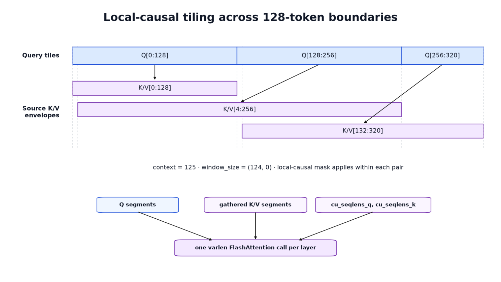
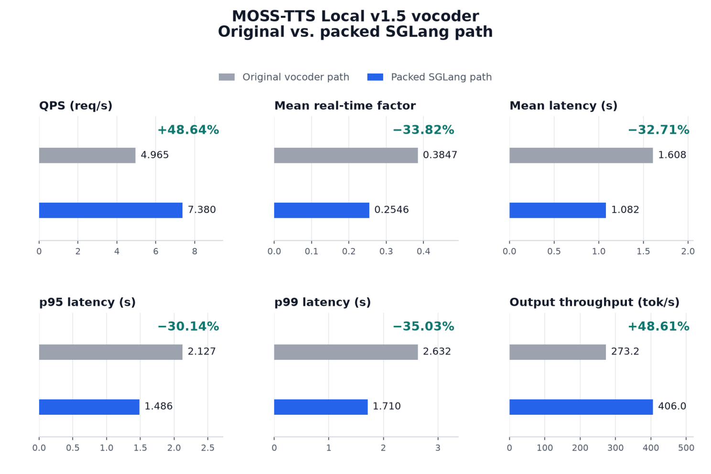

**TTS推理不止是自回归语言模型循环**，一个请求需要经过参考音频编码、编码帧生成、波形重建三个阶段。优化某一阶段后，往往会暴露另一处新的瓶颈。
本文介绍如何在不更换声码器或改动模型架构的前提下，将MOSS-TTS Local v1.5端到端QPS提升近49%。
MOSS-TTS Local v1.5是本地48kHz立体声零样本TTS模型，支持31种语言、长音频生成、时长控制和显式停顿。其推理管线分为三个阶段：
1. **参考编码**：文本分词，参考音频通过MOSS-Audio-Tokenizer-v2转为离散残差量化码，提供音色条件信息；
2. **自回归生成**：36层Qwen3-4B主干逐帧生成音频，随后1层本地Transformer决定继续/停止，并顺序采样12个音频码本；
3. **声码器解码**：生成的编码通过MOSS-Audio-Tokenizer-v2解码器转为波形音频。
自回归阶段输出形状为 [T, 13]（T为音频帧数），但这些只是压缩表示，真正的音频波形还需要声码器处理完整序列后才能生成。对于非流式推理，自回归解码结束并不意味着请求完成：声码器的完整计算仍在其后运行。
在聚焦声码器之前，其他阶段已经完成了大量优化：
参考编码阶段引入了批处理和内容寻址缓存，重复使用的参考音色无需重新运行约十亿参数的音频编码器。自回归引擎采用SGLang调度和CUDA Graphs，为重载解码步骤回放捕获的GPU操作序列。持久化GPU状态减少了逐帧簿记，GPU端基数哈希查找消除了GPU与CPU之间的一个同步点。
解码循环还加入了一步前瞻：主机解析上一步时，可启动下一步GPU解码。帧启动状态池化避免在Python中重建活跃行状态，种子张量采样器编译进CUDA Graph捕获边界。
流式路径则走了另一条优化路线：持久化解码会话允许音频增量输出，CUDA Graph加速了大量小型流式解码器调用。跨阶段内存预算为声码器预留了足够GPU容量，而不是将自回归引擎视为唯一驻留模型。
当再次分析非流式路径时，预处理和自回归的明显热点已不再原始，这使得另一阶段的开销成为主导。
常见TTS推理假设是：自回归LM主干做大部分昂贵工作，最终声码器只是相对轻量的解码器。这个假设更符合Boson AI的Higgs Audio v3 TTS。
Higgs Audio v3同样使用Qwen3规模的自回归主干生成音频编码令牌，但其波形解码器是基于DAC的卷积网络，而不是独立的大Transformer模型。MOSS则部署了MOSS-Audio-Tokenizer-v2的解码器部分：一个约十亿参数、带滑动窗口注意力的因果Transformer独立模型。
这彻底改变了优化面。Higgs解码器围绕卷积和上采样组织，没有需要打包的Transformer注意力路径。而在MOSS中，**波形重建本身包含深度的局部注意力堆栈**，序列布局、填充、注意力内核语义直接影响声码器性能。
MOSS声码器在Transformer阶段和时间上采样阶段之间交替。从L个编码帧开始，Transformer阶段在六种分辨率下运行：125、250、400、400、400、400个位置。注意力始终保持局部，其分数计算随序列长度乘以有界窗口而不是随完整序列长度的平方缩放。

五次patch和上采样阶段在Transformer阶段之间将时间分辨率翻倍。六个Transformer阶段共包含：32 + 12×5 = 92个Transformer层。
每个阶段处理的序列长度不同：第一层L，后续分别为2L、4L、8L、16L、32L。总计算量可通过「层数 × 序列长度」的层-令牌积衡量：32L + 12×(2L+4L+8L+16L+32L) = **776L**。
这还只是注意力部分，不包括投影和前馈网络的开销。第六个Transformer阶段之后，还有一个大小为240的最终patch阶段将扩展特征转为波形采样。这就是为什么自回归模型完成编码帧生成后，声码器仍然开销巨大的原因。
我们原本预期自回归引擎占据剩余的非流式时间大头。但性能分析指向了Transformer密集的声码器。一旦将这个结果映射回架构，原因就很清楚：声码器在将序列从L扩展到32L的同时运行了92个Transformer层。这给出了明确的实现目标：这六个Transformer阶段内部的注意力。
**我们不需要更换声码器或重训权重**。时间上采样阶段、学习的投影、归一化、残差缩放、前馈块和波形路径都不是性能分析识别的瓶颈，因此可以完全照常运行。
修改仅限于数据到达注意力的方式。密集批处理包含对每个短于最长序列的音频序列的填充。封装器移除这些填充行，将有效帧打包在一起，同时保留每个请求的边界和位置，对打包后的表示运行注意力，然后将结果恢复为原始编码期望的密集布局。

投影后的Transformer接收形状为 [batch, max_time, hidden] 的密集批特征张量。由于音频请求很少长度相同，max_time包含对每个短于最长请求的填充，这些行不是编码帧，也不需要通过Transformer堆栈。
SGLang的变长FlashAttention路径期望不同的表示：只收集有效前缀并连接成一个张量，形状为 [sum(input_lengths), hidden]。
伴随打包张量的是cu_seqlens：一个int32累积长度数组，告诉内核每个请求的开始和结束位置。对于三个长度为L0、L1、L2的请求，它是：[0, L0, L0+L1, L0+L1+L2]。
每个打包行还携带位置ID。打包在内存中连接请求，但不能将它们变成一个长序列：每个请求的位置仍然从零重新开始。
Transformer堆栈完成后，有效行被散射回 [batch, max_time, hidden]，该密集张量被传递到原始输出投影。对于没有填充的单个请求的常见情况，收集和散射被完全跳过，直接使用reshape。
MOSS使用因果局部窗口。在原始掩码中，当满足0 ≤ query_position - key_position < context 时，键可见。以第一阶段 context=125 为例，每个查询可以看到自身和最多 124 个先前位置。FlashAttention 通过左右键数描述窗口，等效参数是：window_size = (context - 1, 0)。这个 -1 虽小但很重要：传入 (context, 0) 会在左侧多允许一个键。
FA3还有第二个特定细节：其局部窗口行为与128令牌查询分块绑定。当打包序列跨越这些边界之一时，将完整请求视为一个普通变长序列不会为每个查询重现MOSS掩码。
解决方案是为请求构建局部注意力计划。每个序列被分成最多128令牌的查询分块，每个分块接收包含它可能需要的历史的源K/V区间，然后在该查询/KV对内部应用局部因果掩码。
这些区间会重叠，因此实现为Q段和收集的K/V段构建单独的累积长度。如果所需的K/V布局已经连续，则直接使用。否则，所需行被一次性收集到内核期望的布局中。
分块不会成为单独的内核启动，Q段、收集的K/V段、cu_seqlens_q和cu_seqlens_k被传入每层一个变长FlashAttention调用。计划本身为投影Transformer前向传递构建一次，并在所有层中重用，因为它们的序列几何完全相同。
将Transformer注意力迁移到打包路径后，不仅声码器本身变快，端到端指标的提升幅度更令人惊讶。基准测试在H100上运行1,088个样本的SeedTTS纯生成工作负载：
**QPS从4.965提升到7.380，增幅48.64%**；服务输出吞吐量从每秒273.2帧提升到406.0帧。
**平均延迟从1.608秒降至1.082秒**，尾部延迟同样显著：p95下降30.14%，p99下降35.03%。
**实时因子（处理时间/生成音频时长，越低越好）从0.3847降至0.2546，下降33.82%**。这些测量覆盖完整打包路径，未分离移除填充工作的增益与FA3内核本身的增益。
质量评估也全部达标：1,088样本的语料库WER为2.02%（阈值3.21%），50样本的说话人相似度为65.1（阈值63.7），1,088样本的UTMOS为3.97（阈值3.84）。
最终，优化不需要新的声码器。性能分析给出了精确目标：投影Transformer路径。一旦有效帧被打包且MOSS的局部注意力被正确翻译，SGLang的变长内核就能更高效地执行昂贵部分，这个狭窄改动就足以将端到端QPS提升近49%。
参考：https://www.linkedin.com/pulse/how-we-removed-moss-tts-local-v15s-biggest-bottleneck-palanisamy-yfbzf/?trackingId=TeejpGPJTlCqvL5WKoMLjA%3D%3D